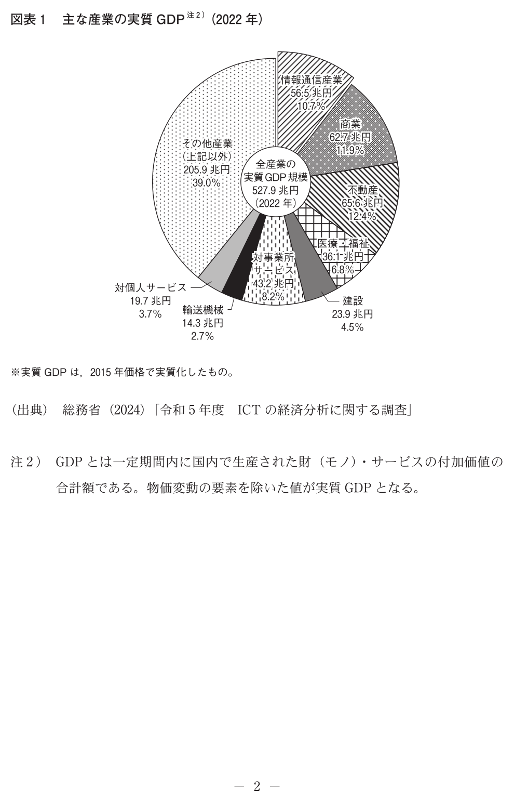
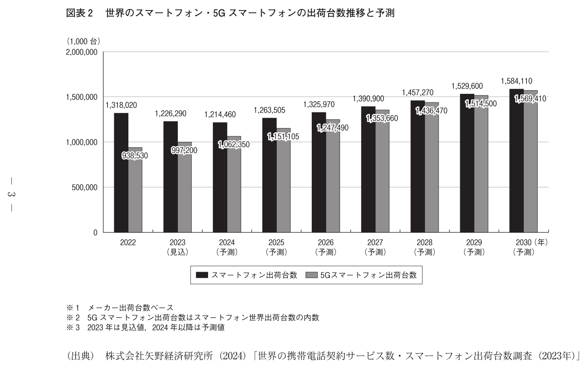
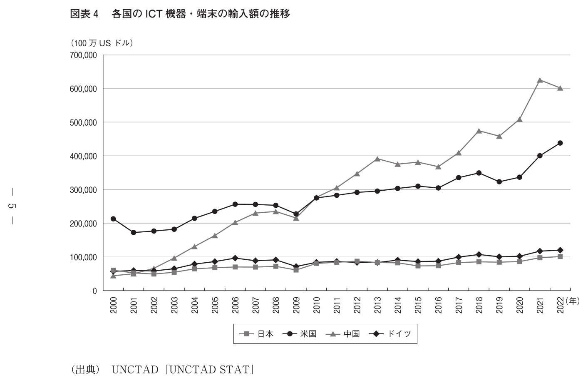

実物で確認：左右の軸が違う

2026 推薦・図表3
中国だけ右軸。同じ高さを同じ金額として読めません。
公式解説：日本に中国用の右軸を当て、増加と誤読した例。
今日から始める1セット
公式過去問

入試情報
問題を解く → 公式の「出題の意図と解答の傾向」を読む → 根拠と構成を直す
過去問の傾向は将来の出題予告ではありません。最新の入試情報は公式ページで確認してください。
2026推薦：図表ギャラリー 1–4


